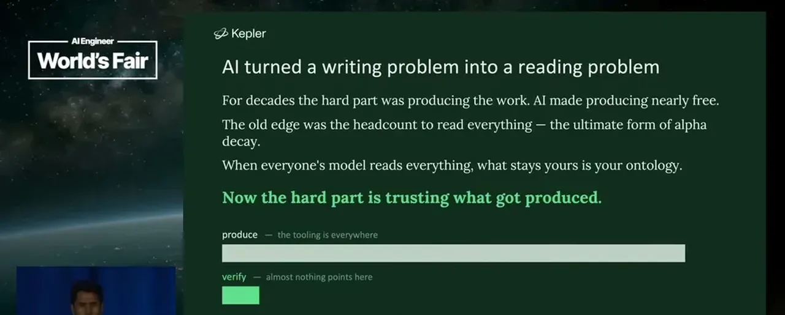
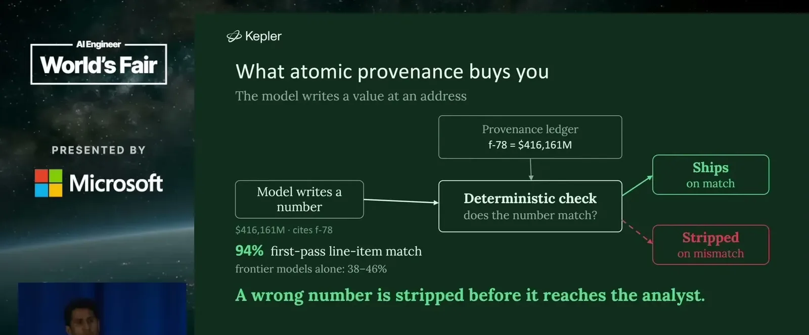
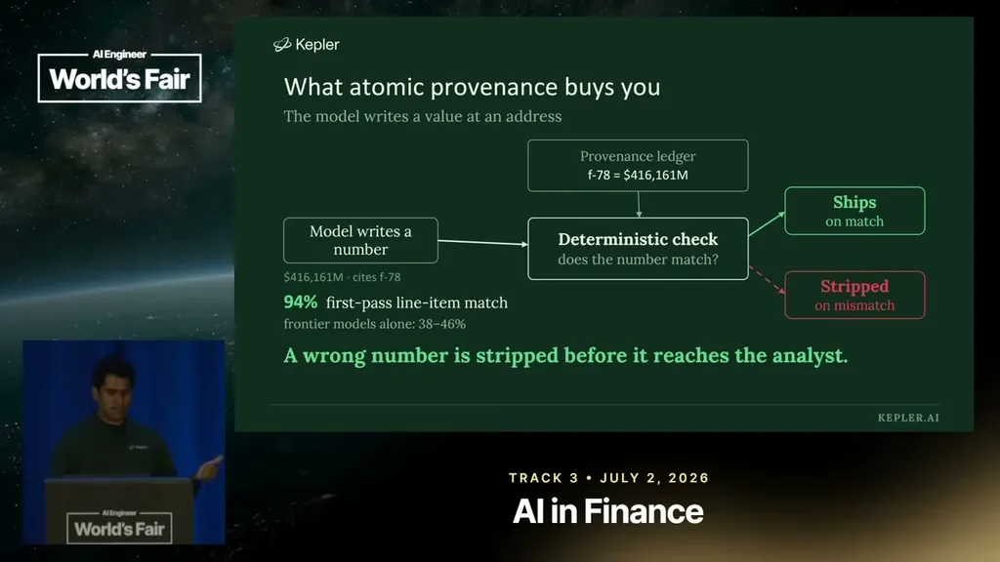
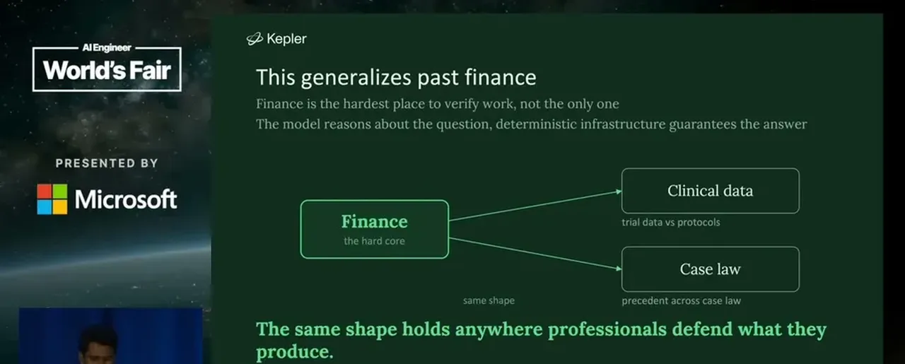

The speaker distinguishes citation, an after-the-fact list of sources, from verification, a deterministic and repeatable mechanism that proves a specific number is correct. He argues most 'trust and verifiability' language in AI products is actually just citation, and that evals cannot make a non-deterministic LLM deterministic.
“The citation is effectively an after-the-fact audit. Now, a verification is a deterministic, repeatable, numerically verifiable mechanism that we can use to produce validity that a number is right”
▶ watch at 06:15“Evals are not verifiable. You cannot take a non-deterministic LLM and eval your way to something deterministic”
▶ watch at 01:33
Software has CI/CD, unit and integration tests, and code review; medicine has a pharmacist checking a doctor's prescription; aviation has a pilot and co-pilot. Finance's closest equivalent is an overworked VP, which the speaker says doesn't function as a real verification layer, and part of why people buy tools like Bloomberg or FactSet is to displace culpability for information they didn't personally verify.
“In finance, we have maybe an overworked VP as a verification layer, but that concept doesn't really exist”
▶ watch at 03:40Kepler's model writes only a reference to where a number came from and never writes or manipulates the number itself; separate deterministic tools extract and persist numbers, and any number that fails an independent deterministic check is stripped before it reaches a user. The model decides what to compute (scope determinism) but never performs the computation, and a derivation chain records what inputs and steps produced each output so it can be replayed.
“the model writes effectively a reference to the number. It cannot write the number or manipulate the number in any way. It doesn't even understand what that number is”
▶ watch at 10:56“the model decides what to compute. It never does the computation itself”
▶ watch at 12:58
A model Kepler trained for extraction outperformed foundation models at 94% accuracy, which the speaker calls impressive on paper but insufficient in practice, since a wrong number is still wrong for whichever case falls in the remaining 6%, and no one should trade off information at that error rate.
“It's 94% great. It's in the article. Who here would trade off of something that's 94% accurate?”
▶ watch at 10:25
The speaker argues the same pattern, extracting and persisting information deterministically so a model can't hallucinate a citation or a number, applies to legal case citations and NIH drug-discovery compound data, and predicts the next stage of the industry will focus on using the right tool for the right computation rather than maximizing token consumption.
“you can imagine a world where every court case, if you're a Harvey or a Legora, runs through the same process”
▶ watch at 16:05
The 94%-is-not-enough framing is a useful corrective to accuracy-percentage marketing generally, though it's worth noting Kepler's own atomic-provenance approach still depends on the model correctly deciding what to compute and where to look, which is itself a non-deterministic step the talk doesn't fully quantify.
| Stance | Claim | t |
|---|---|---|
| warns | Citation, showing where information came from, is only an after-the-fact audit and is not the same as verification. | 06:15 |
| warns | Evals cannot make a non-deterministic LLM produce deterministic, verifiable outputs. | 01:33 |
| asserts | Finance lacks the equivalent of a pharmacist, co-pilot, or code review as a verification layer; at best it has an overworked VP. | 03:40 |
| asserts | The model writes only a reference to where a number came from and cannot write or manipulate the number itself; deterministic tools handle the actual number. | 10:56 |
| asserts | The model decides what to compute but never performs the computation itself, which is handed off to deterministic tooling. | 12:58 |
| warns | A fine-tuned extraction model reached 94% accuracy, but a wrong number is still wrong for anyone in the remaining 6%, so it's not trustworthy for trading decisions. | 10:25 |
| predicts | The same deterministic-extraction pattern will extend to legal case citation tracking and NIH drug-discovery compound data to prevent hallucination. | 16:05 |
Machine-readable copy embedded in this page (script#ontology) and in the corpus ontology.